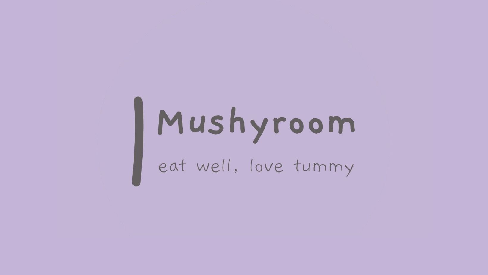

Tentang Kami
Mushyroom merupakan Usaha Kecil Menengah dimulai sejak awal tahun 2021 berlokasi di Makassar, Sulawesi Selatan, bisnis ini dimulai oleh Risa Sujanawati didasari rasa rindu makanan nasi kepal yang sering menemaninya semasa kuliah dulu. Lalu pada akhir tahun yang sama Marketing and Social Media Admin Mushyroom yakni Rima Tsaniyah A.S. mulai mengenalkan makananan olahan jamur ini ke Kabupaten Jombang.